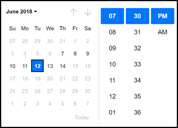
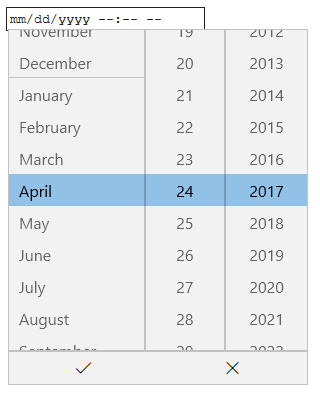
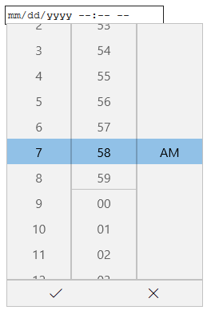
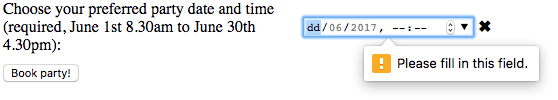
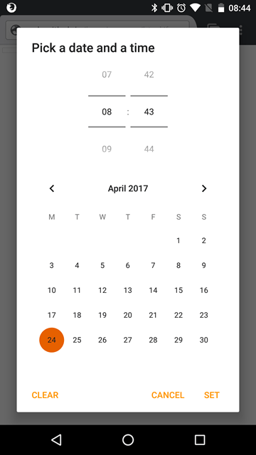

{{htmlelement("input")}} elements of type datetime-local create input controls that let the user easily enter both a date and a time, including the year, month, and day as well as the time in hours and minutes.
The control's UI varies in general from browser to browser; at the moment support is patchy, with Chrome/Opera/Edge and Safari 14.1 on desktop and most modern versions of mobile browsers having usable implementations. In other browsers, these degrade gracefully to simple <input type="text"> controls.
The control is intended to represent a local date and time, not necessarily the user's local date and time. In other words, an implementation should allow any valid combination of year, month, day, hour, and minute - even if such a combination is invalid in the user's local time zone (such as times within a daylight saving time spring-forward transition gap). Some mobile browsers (particularly on iOS) do not currently implement this correctly.
Because of the limited browser support for datetime-local, and the variations in how the inputs work, it may currently still be best to use a framework or library to present these, or to use a custom input of your own. Another option is to use separate date and time inputs, each of which is more widely supported than datetime-local.
Some browsers may resort to a text-only input element that validates that the results are legitimate date/time values before letting them be delivered to the server, as well, but you shouldn't rely on this behavior since you can't easily predict it.
For those of you not using a supporting browser, the Chrome/Opera datetime-local control looks like the below screenshot. Clicking the down arrow on the right hand side brings up a date picker to allow you to choose a date; you have to enter the time manually.

The Edge datetime-local control looks like the below; clicking the date and the time parts of the value bring up two separate pickers for you, so you can easily set both the date and the time. This is somewhat like having date and time widgets both created for you and merged into one.


| {{anch("Value")}} | A {{domxref("DOMString")}} representing a date and time (in the local time zone), or empty. |
| Events | {{domxref("HTMLElement/change_event", "change")}} and {{domxref("HTMLElement/input_event", "input")}} |
| Supported common attributes | {{htmlattrxref("autocomplete", "input")}}, {{htmlattrxref("list", "input")}}, {{htmlattrxref("readonly", "input")}}, and {{htmlattrxref("step", "input")}} |
| IDL attributes | list, value, valueAsNumber. |
| Methods | {{domxref("HTMLInputElement.select", "select()")}}, {{domxref("HTMLInputElement.stepDown", "stepDown()")}}, {{domxref("HTMLInputElement.stepUp", "stepUp()")}} |
A {{domxref("DOMString")}} representing the value of the date entered into the input. The format of the date and time value used by this input type is described in {{SectionOnPage("/en-US/docs/Web/HTML/Date_and_time_formats", "Local date and time strings")}}.
You can set a default value for the input by including a date and time inside the {{htmlattrxref("value", "input")}} attribute, like so:
<label for="party">Enter a date and time for your party booking:</label> <input id="party" type="datetime-local" name="partydate" value="2017-06-01T08:30">
{{ EmbedLiveSample('Value', 600, 60) }}
One thing to note is that the displayed date and time formats differ from the actual value; the displayed date and time are formatted according to the user's locale as reported by their operating system, whereas the date/time value is always formatted yyyy-MM-ddThh:mm. When the above value submitted to the server, for example, it will look like partydate=2017-06-01T08:30.
Note: Also bear in mind that if such data is submitted via HTTP GET, the colon character will need to be escaped for inclusion in the URL parameters, e.g. partydate=2017-06-01T08%3A30. See {{jsxref("Global_Objects/encodeURI", "encodeURI()")}} for one way to do this.
You can also get and set the date value in JavaScript using the {{domxref("HTMLInputElement")}} value property, for example:
var dateControl = document.querySelector('input[type="datetime-local"]');
dateControl.value = '2017-06-01T08:30';
There are several methods provided by JavaScript's {{jsxref("Date")}} that can be used to convert numeric date information into a properly-formatted string, or you can do it manually. For example, the {{jsxref("Date.toISOString()")}} method can be used for this purpose.
In addition to the attributes common to all {{HTMLElement("input")}} elements, datetime-local inputs offer the following attributes:
| Attribute | Description |
|---|---|
{{anch("max")}} |
The latest date and time to accept |
{{anch("min")}} |
The earliest date and time to accept |
{{anch("step")}} |
The stepping interval to use for this input, such as when clicking arrows on spinner controls or performing validation |
maxThe latest date and time to accept. If the {{htmlattrxref("value", "input")}} entered into the element is later than this timestamp, the element fails constraint validation. If the value of the max attribute isn't a valid string which follows the format yyyy-MM-ddThh:mm, then the element has no maximum value.
This value must specify a date string later than or equal to the one specified by the min attribute.
minThe earliest date and time to accept; timestamps earlier than this will cause the element to fail constraint validation. If the value of the min attribute isn't a valid string which follows the format yyyy-MM-ddThh:mm, then the element has no minimum value.
This value must specify a date string earlier than or equal to the one specified by the max attribute.
step{{page("/en-US/docs/Web/HTML/Element/input/number", "step-include")}}
For datetime-local inputs, the value of step is given in seconds, with a scaling factor of 1000 (since the underlying numeric value is in milliseconds). The default value of step is 60, indicating 60 seconds (or 1 minute, or 60,000 milliseconds).
At this time, it's unclear what a value of any means for step when used with datetime-local inputs. This will be updated as soon as that information is determined.
Date/time inputs sound convenient at first glance; they provide an easy UI for choosing dates and times, and they normalize the data format sent to the server, regardless of the user's locale. However, there are issues with <input type="datetime-local"> because of the limited browser support.
We'll look at basic and more complex uses of <input type="datetime-local">, then offer advice on mitigating the browser support issue later on (see {{anch("Handling browser support")}}).
The simplest use of <input type="datetime-local"> involves a basic <input> and {{htmlelement("label")}} element combination, as seen below:
<form> <label for="party">Enter a date and time for your party booking:</label> <input id="party" type="datetime-local" name="partydate"> </form>
{{ EmbedLiveSample('Basic_uses_of_datetime-local', 600, 40) }}
You can use the {{htmlattrxref("min", "input")}} and {{htmlattrxref("max", "input")}} attributes to restrict the dates/times that can be chosen by the user. In the following example we are setting a minimum datetime of 2017-06-01T08:30 and a maximum datetime of 2017-06-30T16:30:
<form> <label for="party">Enter a date and time for your party booking:</label> <input id="party" type="datetime-local" name="partydate" min="2017-06-01T08:30" max="2017-06-30T16:30"> </form>
{{ EmbedLiveSample('Setting_maximum_and_minimum_dates_and_times', 600, 40) }}
The result here is that:
Note: You should be able to use the {{htmlattrxref("step", "input")}} attribute to vary the number of days jumped each time the date is incremented (e.g. maybe you only want to make Saturdays selectable). However, this does not seem to work effectively in any implementation at the time of writing.
<input type="datetime-local"> doesn't support form control sizing attributes such as {{htmlattrxref("size", "input")}}. You'll have to resort to CSS for customizing the sizes of these elements.
One thing the datetime-local input type doesn't provide is a way to set the time zone and/or locale of the date/time control. This was available in the datetime input type, but this type is now obsolete, having been removed from the spec. The main reasons why this was removed are a lack of implementation in browsers, and concerns over the user interface/experience. It is easier to just have a control (or controls) for setting the date/time and then deal with the locale in a separate control.
For example, if you are creating a system where the user is likely to already be logged in, with their locale already set, you could provide the timezone in a hidden input type. For example:
<input type="hidden" id="timezone" name="timezone" value="-08:00">
On the other hand, if you were required to allow the user to enter a timezone along with a date/time input, you could provide a means of inputting a timezone, such as a {{htmlelement("select")}} element:
<select name="timezone_offset" id="timezone-offset" class="span5">
<option value="-12:00">(GMT -12:00) Eniwetok, Kwajalein</option>
<option value="-11:00">(GMT -11:00) Midway Island, Samoa</option>
<option value="-10:00">(GMT -10:00) Hawaii</option>
<option value="-09:50">(GMT -9:30) Taiohae</option>
<option value="-09:00">(GMT -9:00) Alaska</option>
<option value="-08:00">(GMT -8:00) Pacific Time (US & Canada)</option>
...
</select>
In either case, the date/time and time zone values would be submitted to the server as separate data points, and then you'd need to store them appropriately in the database on the server-side.
Note: The above code snippet is taken from All world timezones in an HTML select element.
By default, <input type="datetime-local"> does not apply any validation to entered values. The UI implementations generally don't let you enter anything that isn't a date/time — which is helpful — but a user might still fill in no value and submit, or enter an invalid date and/or time (e.g. the 32nd of April).
You can use {{htmlattrxref("min", "input")}} and {{htmlattrxref("max", "input")}} to restrict the available dates (see {{anch("Setting maximum and minimum dates")}}), and you can use the {{htmlattrxref("required", "input")}} attribute to make filling in the date/time mandatory. As a result, supporting browsers will display an error if you try to submit a date that is outside the set bounds, or an empty date field.
Let's look at an example; here we've set minimum and maximum date/time values, and also made the field required:
<form> <div> <label for="party">Choose your preferred party date and time (required, June 1st 8.30am to June 30th 4.30pm):</label> <input id="party" type="datetime-local" name="partydate" min="2017-06-01T08:30" max="2017-06-30T16:30" required> <span class="validity"></span> </div> <div> <input type="submit" value="Book party!"> </div> </form>
If you try to submit the form with an incomplete date (or with a date outside the set bounds), the browser displays an error. Try playing with the example now:
{{ EmbedLiveSample('Validation', 600, 120) }}
Here's a screenshot for those of you who aren't using a supporting browser:

Here's the CSS used in the above example. Here we make use of the {{cssxref(":valid")}} and {{cssxref(":invalid")}} CSS properties to style the input based on whether or not the current value is valid. We had to put the icons on a {{htmlelement("span")}} next to the input, not on the input itself, because in Chrome the generated content is placed inside the form control, and can't be styled or shown effectively.
div {
margin-bottom: 10px;
display: flex;
align-items: center;
}
label {
display: inline-block;
width: 300px;
}
input:invalid+span:after {
content: '✖';
padding-left: 5px;
}
input:valid+span:after {
content: '✓';
padding-left: 5px;
}
Important: HTML form validation is not a substitute for scripts that ensure that the entered data is in the proper format. It's far too easy for someone to make adjustments to the HTML that allow them to bypass the validation, or to remove it entirely. It's also possible for someone to bypass your HTML entirely and submit the data directly to your server. If your server-side code fails to validate the data it receives, disaster could strike when improperly-formatted data is submitted (or data which is too large, is of the wrong type, and so forth).
As mentioned above, the major problem with using datetime-local inputs at the time of writing is browser support — Chrome/Opera/Edge and Safari support it on desktop, and most modern browsers on mobile. As an example, the datetime-local picker on Firefox for Android looks like this:

Non-supporting browsers gracefully degrade to a text input, but this creates problems both in terms of consistency of user interface (the presented control will be different), and data handling.
The second problem is the most serious; as we mentioned earlier, with a datetime-local input, the actual value is always normalized to the format yyyy-mm-ddThh:mm. With a text input on the other hand, by default the browser has no recognition of what format the date should be in, and there are lots of different ways in which people write dates and times, for example:
ddmmyyyydd/mm/yyyymm/dd/yyyydd-mm-yyyymm-dd-yyyymm-dd-yyyy hh:mm (12 hour clock)mm-dd-yyyy HH:mm (24 hour clock)One way around this is to put a {{htmlattrxref("pattern", "input")}} attribute on your datetime-local input. Even though the datetime-local input doesn't use it, the text input fallback will. For example, try viewing the following demo in a non-supporting browser:
<form>
<div>
<label for="party">Choose your preferred party date and time (required, June 1st 8.30am to June 30th 4.30pm):</label>
<input id="party" type="datetime-local" name="partydate"
min="2017-06-01T08:30" max="2017-06-30T16:30"
pattern="[0-9]{4}-[0-9]{2}-[0-9]{2}T[0-9]{2}:[0-9]{2}" required>
<span class="validity"></span>
</div>
<div>
<input type="submit" value="Book party!">
</div>
<input type="hidden" id="timezone" name="timezone" value="-08:00">
</form>
{{EmbedLiveSample('Handling_browser_support', 600, 100)}}
If you try submitting it, you'll see that the browser now displays an error message (and highlights the input as invalid) if your entry doesn't match the pattern nnnn-nn-nnTnn:nn, where n is a number from 0 to 9. Of course, this doesn't stop people from entering invalid dates, or incorrectly formatted dates and times.
And what user is going to understand the pattern they need to enter the time and date in?
We still have a problem.
div {
margin-bottom: 10px;
}
input:invalid + span {
position: relative;
}
input:invalid + span:after {
content: '✖';
position: absolute;
right: -18px;
}
input:valid + span {
position: relative;
}
input:valid + span:after {
content: '✓';
position: absolute;
right: -18px;
}
The best way to deal with dates in forms in a cross-browser way at the moment is to get the user to enter the day, month, year, and time in separate controls ({{htmlelement("select")}} elements being popular — see below for an implementation), or use JavaScript libraries such as jQuery date picker, and the jQuery timepicker plugin.
JavaScript uses double precision floating points to store dates, as with all numbers, meaning that JavaScript code will not suffer from the Y2K38 problem unless integer coercion/bit-hacks are used because all JavaScript bit operators use 32-bit signed 2s-complement integers.
The problem is with the server side of things: storage of dates greater than 2^31 - 1. To fix this problem, you must store all dates using either unsigned 32-bit integers, signed 64-bit integers, or double-precision floating points on the server. If your server is written in PHP, the fix may be as simple as upgrading to PHP 8 or 7, and upgrading your hardware to x86_64 or IA64. If you are stuck with other hardware, you can try to emulate 64-bit hardware inside a 32-bit virtual machine, but most VMs don't support this kind of virtualization, stability may suffer, and performance will definately suffer greatly.
In many servers, dates are stored as numbers instead of as strings--numbers of a fixed size and agnostic of format (aside from endianness). After the year 10,000, those numbers will just be a little bit bigger than before, so many servers will not see issues with forms submitted after the year 10,000.
The problem is with the client side of things: parsing of dates with more than 4 digits in the year.
<!--midnight of January 1st, 10000: the exact time of Y10K--> <input type="datetime-local" value="+010000-01-01T05:00"/>
It's that simple. Just prepare your code for any number of digits. Do not only prepare for 5 digits. Here is JavaScript code for programmatically setting the value:
function setValue(element, date) {
var isoString = date.toISOString()
element.value = isoString.substring(0, (isoString.indexOf("T")|0) + 6|0);
}
Why worry about the Y10K problem if it is going to happen many centuries after your death? Exactly because you will already be dead, so the companies using your software will be stuck using your software without any other coder who knows the system well enough to come in and fix it.
In this example we create two sets of UI elements for choosing datetimes — a native <input type="datetime-local"> picker, and a set of five {{htmlelement("select")}} elements for choosing dates and times in older browsers that don't support the native input.
{{EmbedLiveSample('Examples', 600, 140)}}
The HTML looks like so:
<form> <div class="nativeDateTimePicker"> <label for="party">Choose a date and time for your party:</label> <input type="datetime-local" id="party" name="bday"> <span class="validity"></span> </div> <p class="fallbackLabel">Choose a date and time for your party:</p> <div class="fallbackDateTimePicker"> <div> <span> <label for="day">Day:</label> <select id="day" name="day"> </select> </span> <span> <label for="month">Month:</label> <select id="month" name="month"> <option selected>January</option> <option>February</option> <option>March</option> <option>April</option> <option>May</option> <option>June</option> <option>July</option> <option>August</option> <option>September</option> <option>October</option> <option>November</option> <option>December</option> </select> </span> <span> <label for="year">Year:</label> <select id="year" name="year"> </select> </span> </div> <div> <span> <label for="hour">Hour:</label> <select id="hour" name="hour"> </select> </span> <span> <label for="minute">Minute:</label> <select id="minute" name="minute"> </select> </span> </div> </div> </form>
The months are hard-coded (as they are always the same), while the day and year values are dynamically generated depending on the currently selected month and year, and the current year respectively (see the code comments below for detailed explanations of how these functions work.) We also decided to dynamically generate the hours and minutes, as there are so many of them!
div {
margin-bottom: 10px;
position: relative;
}
input[type="number"] {
width: 100px;
}
input + span {
padding-right: 30px;
}
input:invalid+span:after {
position: absolute;
content: '✖';
padding-left: 5px;
}
input:valid+span:after {
position: absolute;
content: '✓';
padding-left: 5px;
}
The other part of the code that may be of interest is the feature detection code — to detect whether the browser supports <input type="datetime-local">, we create a new {{htmlelement("input")}} element, try setting its type to datetime-local, then immediately check what its type is set to. Browsers that don't support datetime-local return text, since that's what datetime-local falls back to. If <input type="datetime-local"> is not supported, we hide the native picker and show the fallback picker UI ({{htmlelement("select")}}) instead.
// define variables
var nativePicker = document.querySelector('.nativeDateTimePicker');
var fallbackPicker = document.querySelector('.fallbackDateTimePicker');
var fallbackLabel = document.querySelector('.fallbackLabel');
var yearSelect = document.querySelector('#year');
var monthSelect = document.querySelector('#month');
var daySelect = document.querySelector('#day');
var hourSelect = document.querySelector('#hour');
var minuteSelect = document.querySelector('#minute');
// hide fallback initially
fallbackPicker.style.display = 'none';
fallbackLabel.style.display = 'none';
// test whether a new datetime-local input falls back to a text input or not
var test = document.createElement('input');
try {
test.type = 'datetime-local';
} catch (e) {
console.log(e.description);
}
// if it does, run the code inside the if() {} block
if(test.type === 'text') {
// hide the native picker and show the fallback
nativePicker.style.display = 'none';
fallbackPicker.style.display = 'block';
fallbackLabel.style.display = 'block';
// populate the days and years dynamically
// (the months are always the same, therefore hardcoded)
populateDays(monthSelect.value);
populateYears();
populateHours();
populateMinutes();
}
function populateDays(month) {
// delete the current set of <option> elements out of the
// day <select>, ready for the next set to be injected
while(daySelect.firstChild){
daySelect.removeChild(daySelect.firstChild);
}
// Create variable to hold new number of days to inject
var dayNum;
// 31 or 30 days?
if(month === 'January' || month === 'March' || month === 'May' || month === 'July' || month === 'August' || month === 'October' || month === 'December') {
dayNum = 31;
} else if(month === 'April' || month === 'June' || month === 'September' || month === 'November') {
dayNum = 30;
} else {
// If month is February, calculate whether it is a leap year or not
var year = yearSelect.value;
var isLeap = new Date(year, 1, 29).getMonth() == 1;
isLeap ? dayNum = 29 : dayNum = 28;
}
// inject the right number of new <option> elements into the day <select>
for(i = 1; i <= dayNum; i++) {
var option = document.createElement('option');
option.textContent = i;
daySelect.appendChild(option);
}
// if previous day has already been set, set daySelect's value
// to that day, to avoid the day jumping back to 1 when you
// change the year
if(previousDay) {
daySelect.value = previousDay;
// If the previous day was set to a high number, say 31, and then
// you chose a month with less total days in it (e.g. February),
// this part of the code ensures that the highest day available
// is selected, rather than showing a blank daySelect
if(daySelect.value === "") {
daySelect.value = previousDay - 1;
}
if(daySelect.value === "") {
daySelect.value = previousDay - 2;
}
if(daySelect.value === "") {
daySelect.value = previousDay - 3;
}
}
}
function populateYears() {
// get this year as a number
var date = new Date();
var year = date.getFullYear();
// Make this year, and the 100 years before it available in the year <select>
for(var i = 0; i <= 100; i++) {
var option = document.createElement('option');
option.textContent = year-i;
yearSelect.appendChild(option);
}
}
function populateHours() {
// populate the hours <select> with the 24 hours of the day
for(var i = 0; i <= 23; i++) {
var option = document.createElement('option');
option.textContent = (i < 10) ? ("0" + i) : i;
hourSelect.appendChild(option);
}
}
function populateMinutes() {
// populate the minutes <select> with the 60 hours of each minute
for(var i = 0; i <= 59; i++) {
var option = document.createElement('option');
option.textContent = (i < 10) ? ("0" + i) : i;
minuteSelect.appendChild(option);
}
}
// when the month or year <select> values are changed, rerun populateDays()
// in case the change affected the number of available days
yearSelect.onchange = function() {
populateDays(monthSelect.value);
}
monthSelect.onchange = function() {
populateDays(monthSelect.value);
}
//preserve day selection
var previousDay;
// update what day has been set to previously
// see end of populateDays() for usage
daySelect.onchange = function() {
previousDay = daySelect.value;
}
Note: Remember that some years have 53 weeks in them (see Weeks per year)! You'll need to take this into consideration when developing production apps.
{{Specifications}}
{{Compat}}
<input type="date"> and <input type="time">